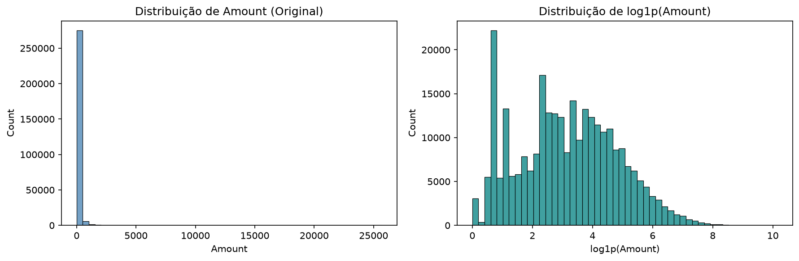
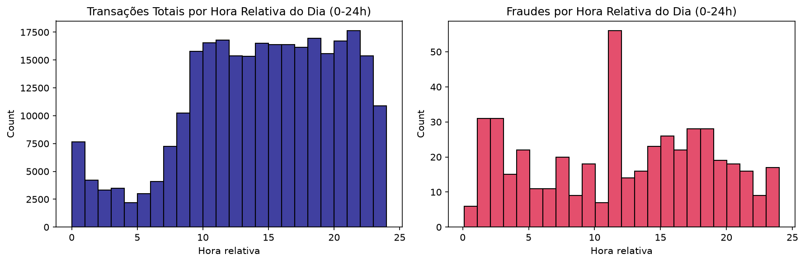
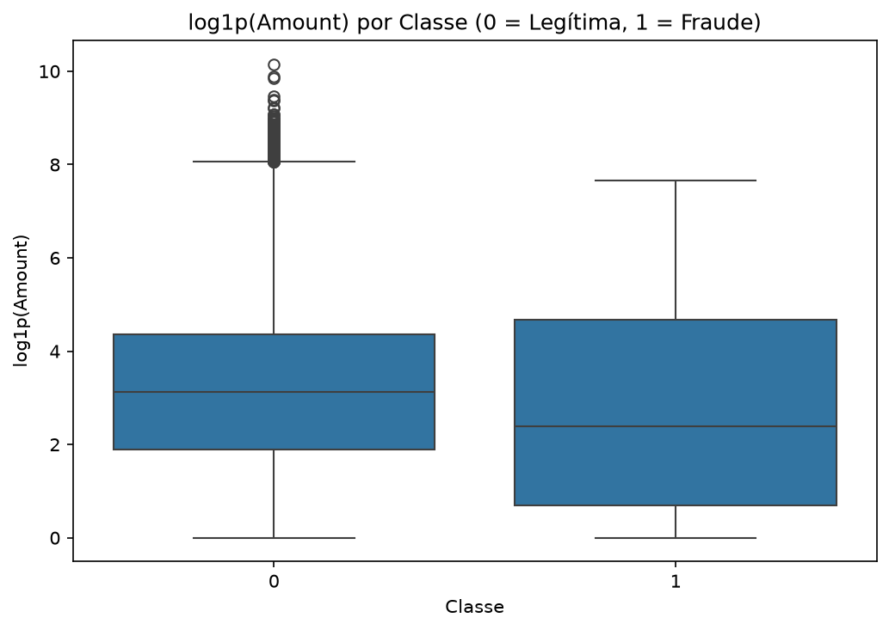
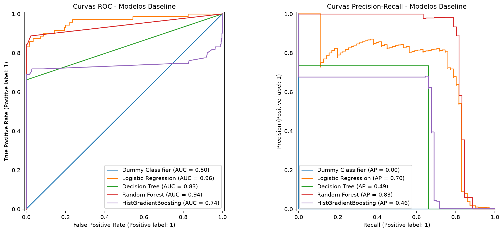
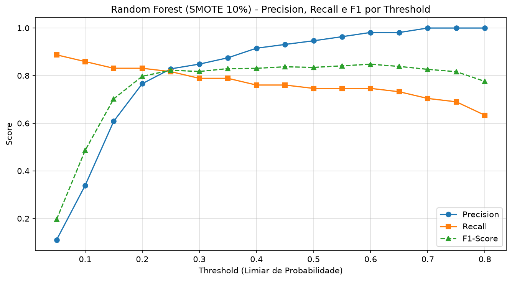

MACHINE LEARNING
Detecção de fraudes em cartões de crédito
Pipeline completo de Machine Learning, auditado contra vazamento de dados (data leakage), para identificação de transações fraudulentas em cenário de desbalanceamento extremo (0,17% de fraudes), combinando engenharia de atributos cíclicos, SMOTE, Random Forest otimizado via PR-AUC e calibração de limiar de decisão.
Ver repositório no GitHub ↗Visão geral
Instituições financeiras e processadoras de pagamento precisam identificar transações fraudulentas em tempo real sem prejudicar a experiência de clientes legítimos. Para estudar esse problema, este projeto utiliza o conjunto de dados público Credit Card Fraud Detection (ULB / Kaggle), composto por transações reais de titulares de cartões europeus registradas ao longo de 48 horas.
A base contém 28 variáveis numéricas resultantes de uma transformação PCA (V1 a V28, aplicada para anonimização e proteção de dados sensíveis), além do tempo decorrido desde a primeira transação (Time), do valor financeiro da compra (Amount) e do rótulo da classe (0 para transação legítima e 1 para fraude).
O problema impõe dois desafios técnicos principais:
- Desbalanceamento extremo: após a limpeza da base, apenas 473 das 283.726 transações únicas são fraudulentas (0,17%, ou cerca de 17 fraudes a cada 10.000 transações). Nesse cenário, a acurácia tradicional é inadequada, pois um classificador trivial que aprove todas as compras atinge 99,83% de acurácia com 0% de detecção;
- Assimetria de custos (Precision vs. Recall): um falso negativo (aprovar uma fraude) gera prejuízo financeiro direto por chargeback, enquanto um falso positivo (bloquear um cliente legítimo) causa atrito, insatisfação e perda de receita.
Objetivos e metodologia
O objetivo do projeto foi construir um pipeline reprodutível e livre de vazamento de dados (data leakage), maximizando a área sob a curva Precision-Recall (Average Precision / PR-AUC) e calibrando o limiar de probabilidade (Threshold Tuning) para oferecer pontos de operação claros ao negócio.
Como foi desenvolvido
O pipeline foi estruturado em Python com Scikit-Learn e Imbalanced-Learn, seguindo seis etapas:
- Saneamento e prevenção de data leakage: a base bruta possui 284.807 registros, dos quais 1.081 são duplicatas exatas (incluindo 19 registros duplicados de fraude). Todas as duplicatas foram removidas antes da divisão dos dados, evitando que cópias idênticas caíssem simultaneamente no treino e no teste e inflassem artificialmente o desempenho de modelos baseados em árvores;
- Divisão estratificada (70% / 15% / 15%): separação em conjuntos de Treinamento (198.608 transações, 331 fraudes), Validação (42.559 transações, 71 fraudes) e Teste final isolado (42.559 transações, 71 fraudes), preservando a proporção de 0,1668% em cada partição;
- Análise exploratória de dados (EDA): a comparação por classe revelou que as fraudes possuem média financeira maior (US$ 123,87 contra US$ 88,47 nas legítimas), mas mediana muito menor (US$ 9,82 contra US$ 22,00), refletindo o padrão de microtransações de teste antes de compras de alto valor. A análise temporal também mostrou picos de risco durante a madrugada (01h às 06h) e no fim da manhã (11h às 12h);
- Engenharia de atributos encapsulada: aplicação de transformação logarítmica log1p(Amount) para estabilizar a cauda longa de valores, codificação trigonométrica cíclica da hora do dia (seno e cosseno extraídos de Time) e padronização via StandardScaler dentro de um ColumnTransformer;
- Modelagem e tratamento de desbalanceamento: comparação sistemática no conjunto de validação entre modelos baseline (Dummy, Regressão Logística, Árvore de Decisão, Random Forest e HistGradientBoosting), ponderação de classes (class_weight="balanced") e sobreamostragem sintética com SMOTE (sampling_strategy=0.10, executado estritamente após o escalonamento e apenas nos folds de treino);
- Otimização e calibração de limiar: ajuste de hiperparâmetros via RandomizedSearchCV com validação cruzada estratificada (StratifiedKFold, refit="average_precision") e análise da curva de limiar de probabilidade entre 0,05 e 0,80.
A escolha do PR-AUC em vez do ROC-AUC como métrica guia foi decisiva: no conjunto de validação, a Regressão Logística atingiu ROC-AUC de 0,96 (contra 0,94 do Random Forest), mas apenas 0,70 de PR-AUC (contra 0,83 do Random Forest). Como a curva ROC divide os falsos positivos pelo total de 42.488 transações legítimas, ela mascara centenas de falsos alarmes que a curva Precision-Recall expõe diretamente.
Análise exploratória e modelagem








O código-fonte completo em Python, o Jupyter Notebook documentado e as instruções para reprodução local estão disponíveis no repositório do projeto no GitHub ↗.
Resultados
Avaliando o pipeline campeão (ColumnTransformer + SMOTE + Random Forest otimizado) uma única vez no conjunto de teste isolado (42.488 transações legítimas e 71 fraudes), a calibração do limiar demonstrou ganhos claros sobre o corte padrão:
- Limiar padrão (0,50): Precision de 82,35%, Recall de 78,87% e F1-Score de 80,58% (56 de 71 fraudes detectadas, com 12 falsos positivos);
- Limiar otimizado (0,75): Precision de 92,86%, Recall de 73,24% e F1-Score de 81,89% (52 de 71 fraudes detectadas, reduzindo os falsos positivos para apenas 4 em 42.488 compras legítimas — taxa de falso bloqueio inferior a 0,01%).
A partir dessa calibração, a recomendação prática de operação divide a tomada de decisão em duas camadas: bloqueio preventivo automático para probabilidades iguais ou superiores a 0,75 (altíssima precisão, sem atrito relevante com clientes legítimos) e autenticação adicional (step-up via notificação no aplicativo ou SMS) na faixa intermediária entre 0,20 e 0,75, permitindo capturar mais de 83% das fraudes totais sem bloquear o cartão diretamente.
Limitações e melhorias futuras
Como as variáveis V1 a V28 são componentes principais anonimizadas, não é possível criar atributos específicos de domínio bancário, como frequência de compras por cartão, distância geográfica ou histórico por estabelecimento, e a janela de 48 horas não captura mudanças de padrão sazonal (concept drift). Como próximos passos, pretendo avaliar algoritmos de boosting (LightGBM e XGBoost), aplicar calibração isotônica de probabilidades (CalibratedClassifierCV) e incorporar uma matriz de custo financeiro ponderada pelo valor de cada transação.